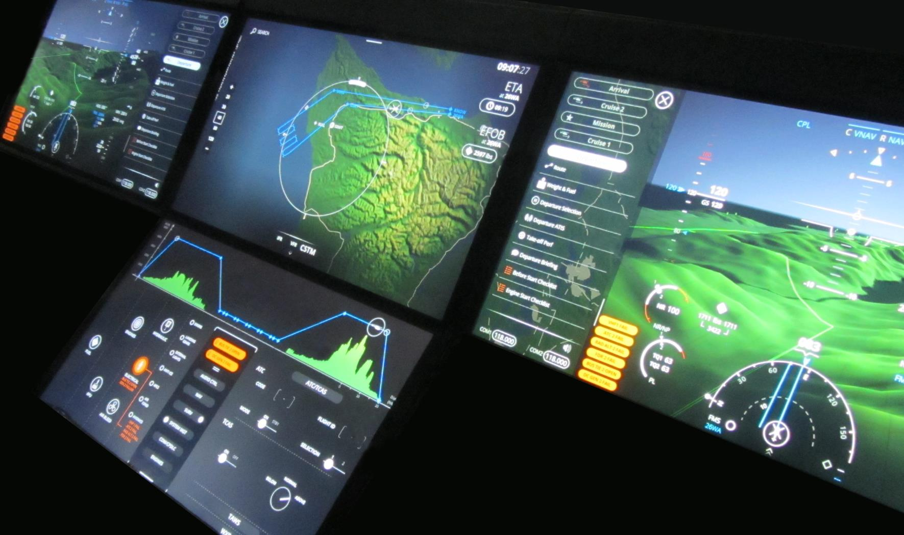
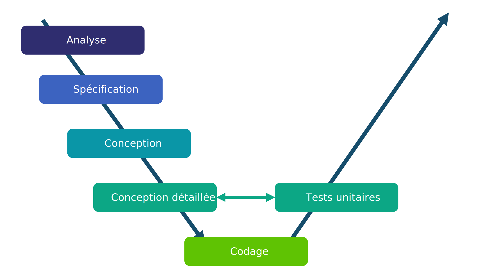
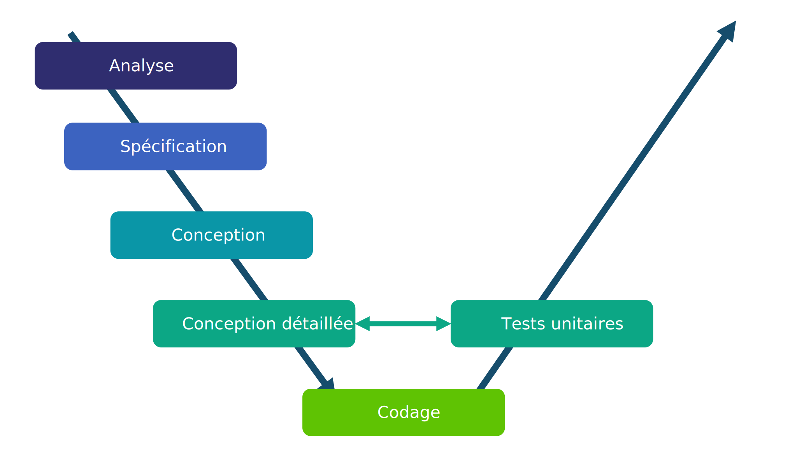
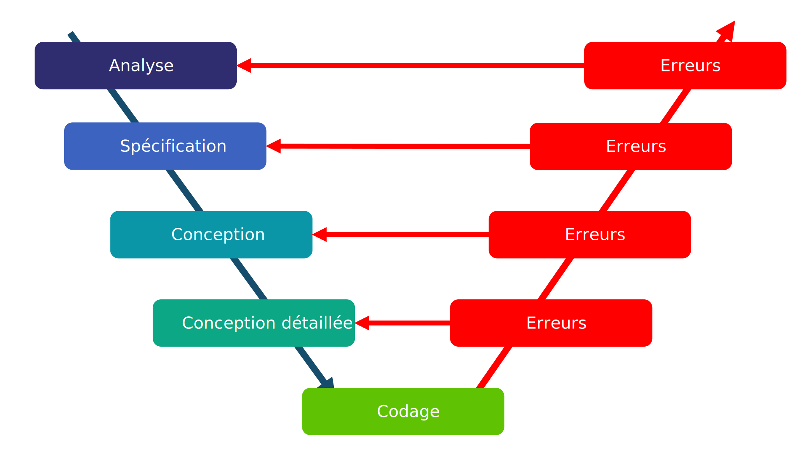
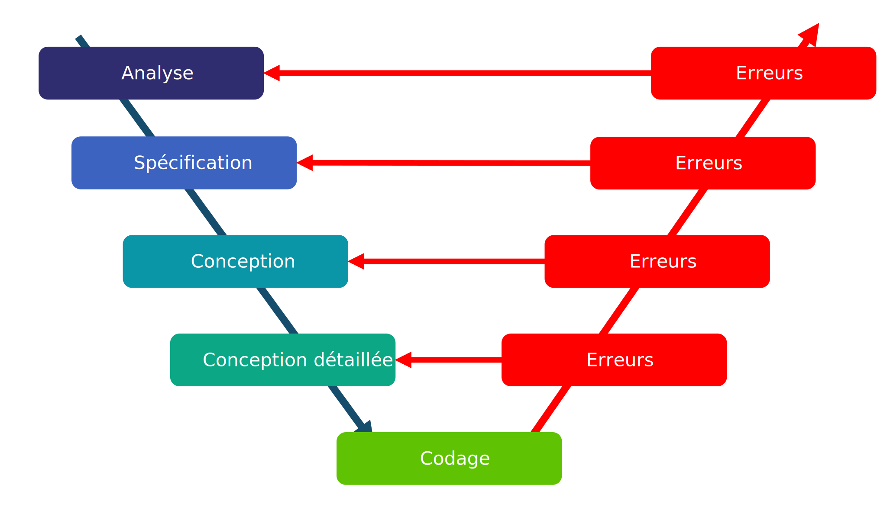
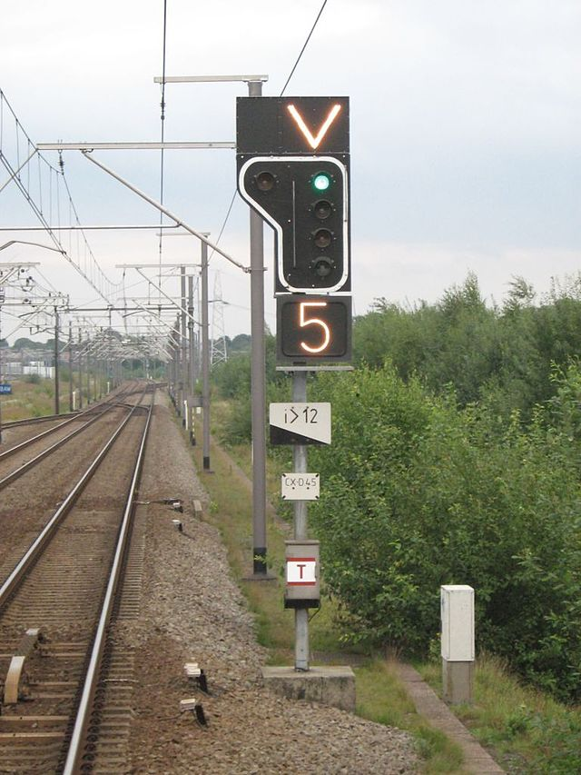
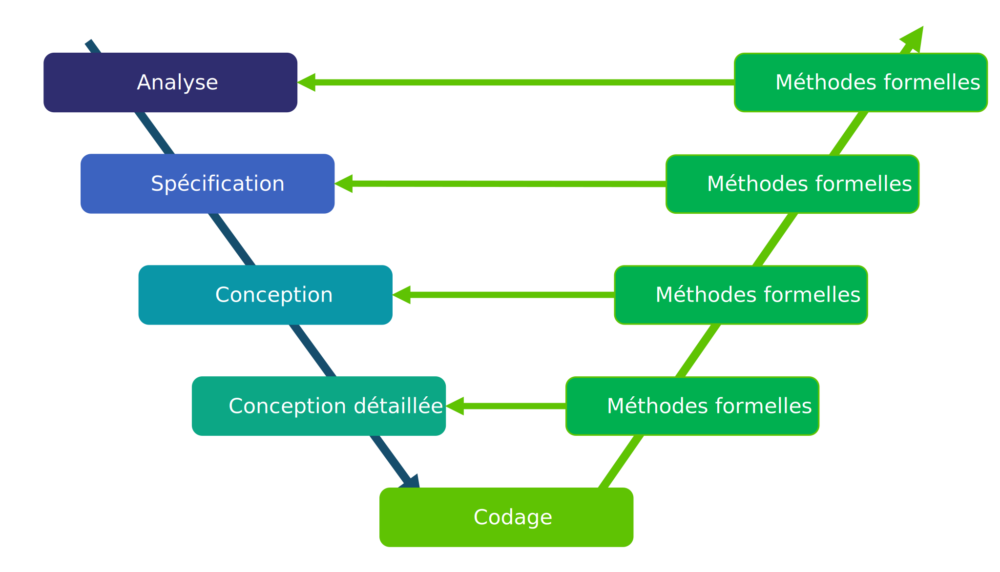

Développement de systèmes critiques
avec la méthode Event-B
Présentation de l'électif
3A cursus ingénieurs - Mention Sciences du Logiciel
CentraleSupelec - Université Paris-Saclay - 2024/2025
CentraleSupelec - Université Paris-Saclay - 2024/2025
Idir AIT SADOUNE

-
Docteur en Informatique diplômé par l'ENSMA en 2010.
-
Thèse sur la
modélisation et la vérification des services
par une approche basée sur le raffinement et sur la preuve.
-
Thèse sur la
modélisation et la vérification des services
-
Enseignant au sein du département informatique
de CentraleSupelec - Université Paris-Saclay. -
Chercheur membre des pôles Modèles et Preuve
du LMF - Laboratoire Méthodes Formelles.
Le logiciel informatique




Cycle de développement
 



 

Des erreurs possibles à toutes les étapes du développement.
Logiciels critiques
-
Une défaillance dans un logiciel peut avoir
des conséquences
catastrophiques (humaines, financières, ...). - Exemple du calculateur de bord d'Ariane 5

Situations à éviter !!!


Solutions
- Les règles et les techniques de programmation.
- Le support des langages de programmation.
- Les méthodologies de conception et de développement.
- Le test.
- Les méthodes formelles.
La place des méthodes formelles


Utiliser les méthodes formelles dans toutes les étapes.
Qui recommande
les méthodes formelles ?
- Normes européennes
L'utilisation de spécifications formelles seule rend les exigences
non ambiguës. - Normes de l'aéronautique
L'utilisation de méthodes formelles a pour but d'éliminer les erreurs
de spécification, de conception et de codage lors du développement. - Normes du ferroviaire
Pour les spécifications, des méthodes formelles sont recommandées
car le modèle formel fournit précision, non ambiguïté et cohérence.
Exemples de normes
- Les normes européennes EN 50126, EN 50128, EN 50129
- des standards utilisés dans le domaine ferroviaire.
- requises pour les fournisseurs d'équipements de contrôle-commande.

Les méthodes formelles
recommandées
- Quelques méthodes formelles recommandées par les normes :
- "CSP, HOL, LOTOS, Temporal Logic, B Method, Model Checking ..."
- page 103 de la norme EN 50128
Les méthodes B
et Event-B
- Méthodes formelles permettant le développement de logiciels sûrs.
- Conçue par le mathématicien français J.R Abrial en 1996.
- Repose sur les travaux menés à l’université d’Oxford par C.A.R. Hoare.
- The B-Book et Modeling in Event-B de J.R. Abrial sont les ouvrages fondamentaux des méthodes B et Event-B.
Méthode B & Secteurs d'activités
- Premier métro autonome (Ligne 14 - Projet Meteor - 1998)
- Ferroviaire : exemples de projets
- Automobile : exemples de projets
- Energie : exemples de projets
- Micro-électronique : exemples de projets
- Défense : exemples de projets
Objectifs du cours
- Donner un aperçu sur les activités de modélisation et du raisonnement formel
- Montrer que les programmes peuvent être corrects par construction
- Montrer que la modélisation peut être rendue pratique
- Illustrer cette approche par de nombreux exemples
Ce que vous apprendrez
À la fin du cours, vous devriez être à l'aise avec :
- La modélisation (versus programmation)
- L'abstraction et le raffinement
- Quelques techniques mathématiques utilisées pour le raisonnement
- La pratique de la preuve comme moyen de construire des programmes
- L'utilisation de certains outils de preuve